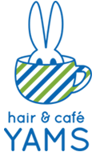
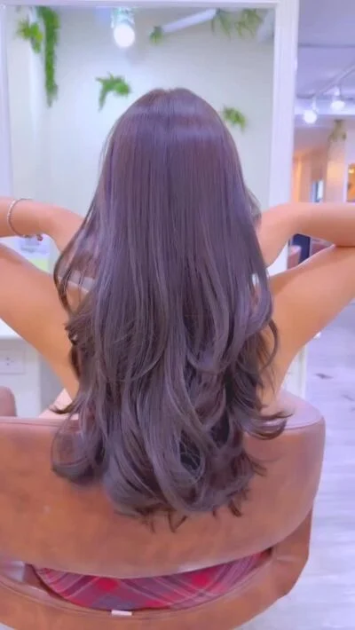
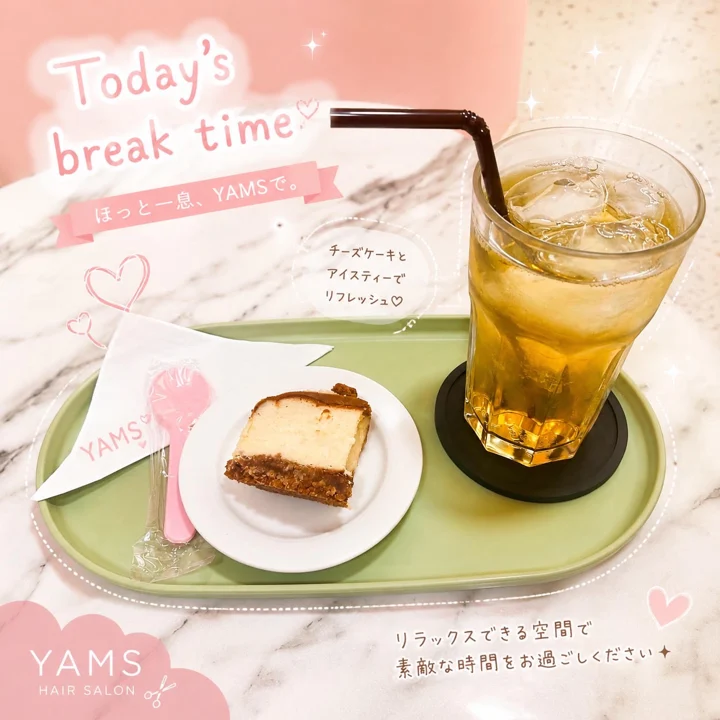
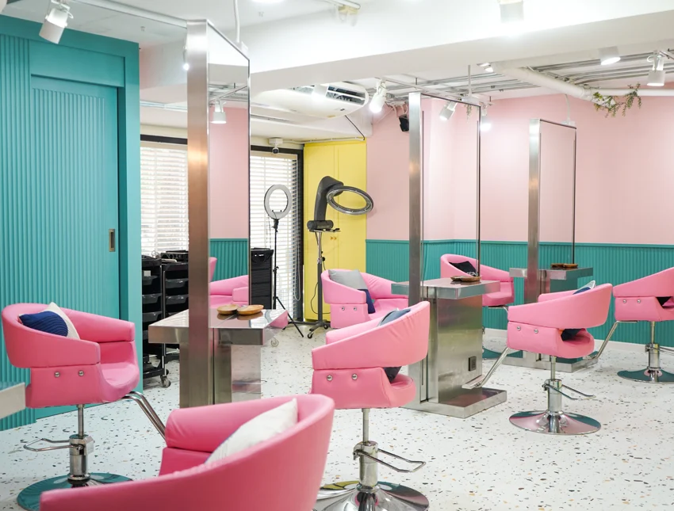
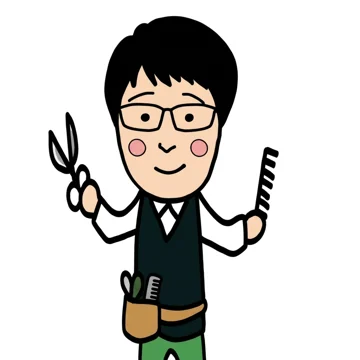
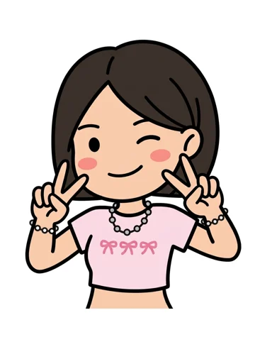
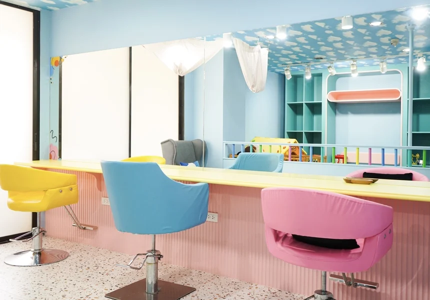

WELCOME TO OUR LITTLE SALON
WELCOME TO OUR LITTLE SALON01 / HELLO, YAMS
ママの「わたし時間」。
ここでは、親子で。
忙しい毎日に、キレイとひと息を。
お母さんの声から生まれたヘアサロンです。

hair & cafeYAMSSTORIESA HAIR SALON FOR YOU & YOUR LITTLE ONES.
InstagramWELCOME TO OUR LITTLE SALON01 / HELLO, YAMS
忙しい毎日に、キレイとひと息を。
お母さんの声から生まれたヘアサロンです。
 LITTLE ONES, BIG SMILES.
LITTLE ONES, BIG SMILES. A HELPING HAND, ALWAYS NEAR.
A HELPING HAND, ALWAYS NEAR.
YOUR EVERYDAY, A LITTLE LOVELIER.
A SWEET LITTLE BREAK.05 / HAIR & CAFE
今月のスイーツと、くつろぎの時間。
サロンで過ごすひと時が、リラクゼーションに。
2026年9月の掲載内容 / 現在の提供内容とは異なる場合があります。

GOOD HAIR, GOOD DAY.




SEE YOU AT YAMS.08 / YOUR NEXT LITTLE BREAK
スクンビット 49 / 11
Prime Mansion Promsri 2階 · 駐車場完備
9:00–18:00（タイ時間）
定休日：水曜日、第2・第4木曜日